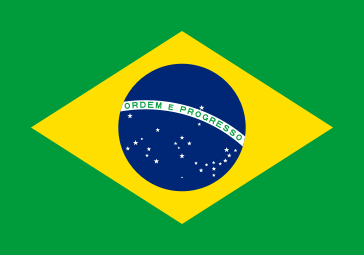

Brazil (Portuguese: Brasil, pronounced [bɾaˈziw]), officially the Federative Republic of Brazil (Portuguese: audio speaker iconRepública Federativa do Brasil),[11] is the largest country in both South America and Latin America. At 8.5 million square kilometers (3,300,000 sq mi)[12] and with over 211 million people, Brazil is the world's fifth-largest country by area and the sixth most populous. Its capital is Brasília, and its most populous city is São Paulo. The federation is composed of the union of the 26 states and the Federal District. It is the largest country to have Portuguese (namely Brazilian Portuguese) as an official language and the only one in the Americas;[13][14] it is also one of the most multicultural and ethnically diverse nations, due to over a century of mass immigration from around the world;[15] as well as the most populous Roman Catholic-majority country. Bounded by the Atlantic Ocean on the east, Brazil has a coastline of 7,491 kilometers (4,655 mi).[16] It borders all other countries in South America except Ecuador and Chile and covers 47.3% of the continent's land area.[17] Its Amazon basin includes a vast tropical forest, home to diverse wildlife, a variety of ecological systems, and extensive natural resources spanning numerous protected habitats.[16] This unique environmental heritage makes Brazil one of 17 megadiverse countries, and is the subject of significant global interest, as environmental degradation through processes like deforestation has direct impacts on global issues like climate change and biodiversity loss.
